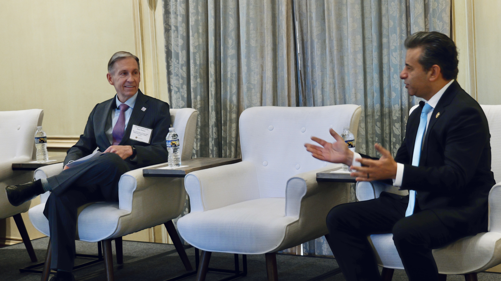

From annual meetings to FDA-PDS symposia, our events bring together leaders, innovators, and advocates driving progress against cancer.

Our events bring together top executives, oncologists, and researchers for candid dialogue and collaborative action.
For the full report from any of our meetings, reach out to our team.
Request a Report →Mark your calendar for these upcoming gatherings of cancer-fighting leaders.
The annual gathering of CEORT members, featuring updates on Gold Standard accreditation, Project Data Sphere initiatives, panel discussions on breakthrough research, and strategic planning sessions for the year ahead.
A look back at key events that have shaped the CEO Roundtable on Cancer’s mission and programs.
The CEO Roundtable on Cancer participated in the American Society of Clinical Oncology (ASCO) 2025 Annual Meeting, highlighting a new era in oncology innovation and the organization’s role in advancing cancer research and care through collaborative initiatives.
The eleventh installment in the landmark FDA–Project Data Sphere symposia series, continuing the multi-year partnership focused on building consensus within the scientific community to advance cancer research through data sharing, AI, and regulatory science.
Themed “Advancing Cancer Research and Care through Collaborative Innovation,” the 2024 annual meeting featured keynotes and panel discussions on AI in cancer care, improving access to clinical trials in underserved communities, and a spotlight on Going for Gold partners.
The Partnership Summit highlighted the CEO Roundtable’s engagement with the Cancer Moonshot initiative, the Cancer Stage Shifting Initiative, Going for Gold expansion, and the launch of the ACE (Access, Choice and Education) Cohort in Clinical Trials.
The annual meeting convened CEORT members and partners to review progress on key initiatives including the Gold Standard program, Project Data Sphere, and new health equity partnerships.
The Going for Gold Summit brought together Gold Standard companies, HBCUs, and community health organizations to advance equitable cancer care and expand the initiative’s reach among communities disproportionately affected by cancer.
For over six years, the CEO Roundtable on Cancer’s Project Data Sphere has partnered with the FDA through a landmark series of symposia focused on building scientific consensus to advance cancer research.
Focused on offering new approaches to think about data sharing and the reuse of clinical trial data, exploring how shared data can accelerate oncology research and improve patient outcomes.
The first virtual symposium in the series addressed critical questions in rare cancer registries, which hold the potential to solve some of the most difficult challenges to advancing treatment for rare cancers—accounting for more than 20% of cancers reported worldwide.
Focused on the development of machine learning algorithms based on CT images to improve the efficiency and consistency of tumor measurements. CT scans offer a consistent methodology applicable for 90% of solid tumors.
Addressed immune-related adverse events and checkpoint blockade combination therapies, exploring the growing complexity of immunotherapy treatment landscapes in oncology.
Co-hosted near FDA headquarters, the fifth symposium explored “Growing Dimensions of Big Data in Cancer Research,” examining how large-scale data analytics can transform cancer treatment and prevention strategies.
Members and invited guests can attend CEORT events. Contact us to learn about upcoming opportunities.